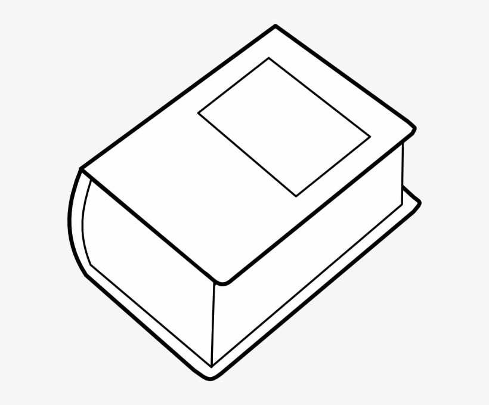

DICTIONARY

Secondary Option
Provides exceptional kinetic mass but is highly cumbersome and destroys your mobility.
Only use this static area-denial tool if you have already missed the Target.
Choose Again >>